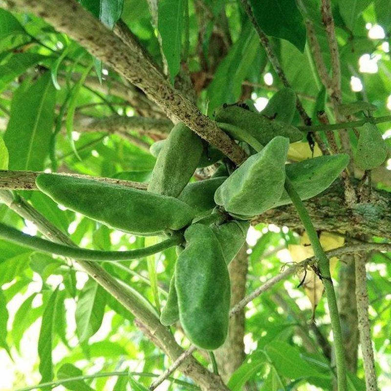
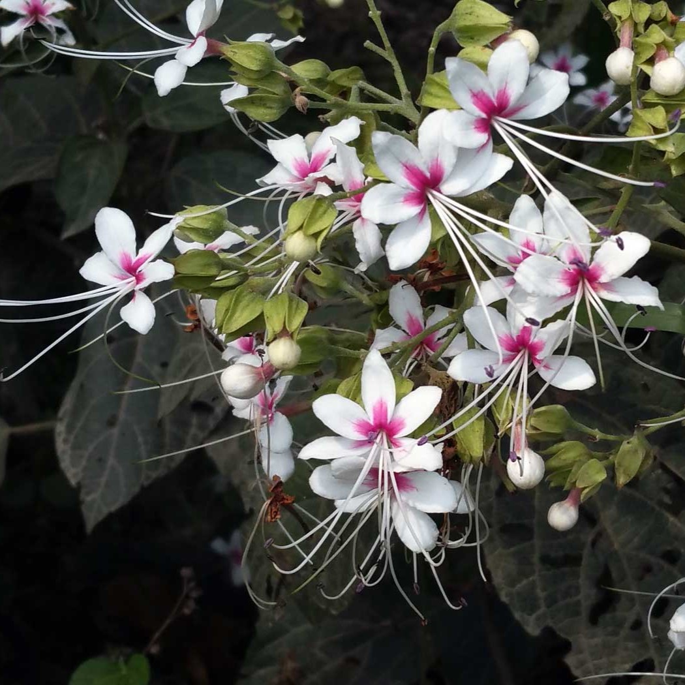

สธ. ประกาศรายชื่อ “สมุนไพรไทย” 22 ชนิดเสี่ยงสูญพันธุ์ และคัดเลือกสมุนไพร 7 ชนิด ออกประกาศคุ้มครองและควบคุม
ผู้ครอบครองต้องแจ้งจำนวนที่มี เพื่อทำแผนการใช้และการปลูกทดแทน เนื่องจากเป็นสมุนไพรที่เติบโตช้า
เมื่อจะใช้ต้องใช้ทั้งต้น บางชนิดใช้ทั้งราก และต้องใช้บ่อยจึงจะสามารถรักษาอาการได้
ขณะนี้มีสมุนไพรไทย 22 ชนิด ที่เสี่ยงอาจจะสูญพันธุ์ได้ ประกอบด้วย
1. ถั่วดินโคก
|
2. เทพทาโร
|
3. มะตูมนิ่ม
|
4. มะหาด
|
5. เร่ว
|
6. หัวร้อยรู
|
7. กระทุ่มนา
|
8. ขันทองพยาบาท
|

9. จุกโรหินี
|
10. ชะเอมไทย
|
11. ชิงชี่
|
12. ตับเต่า
|

13. นางแย้มป่า
|
14. ปลาไหลเผือก
|
15. พังคี
|
16. มะคังแดง
|
17. สะค้าน
|
18. สารภีป่า
|
19. อบเชยไทย
|
20. เฉียงพร้านางแอ
|
21. เถาเอ็นอ่อน
|
22. เปราะหอม
|
คณะกรรมการคุ้มครองและส่งเสริมภูมิปัญญาการแพทย์แผนไทยได้ประชุมหารือกันโดยเลือกสมุนไพร 6 ชนิดจาก 22 ชนิดขึ้นมา คือ
1. ถั่วดินโคก มีอีกชื่อว่าพิษนาศน์ : ช่วยขับน้ำ ช่วยขับพิษภายใน ช่วยลดไข้ในเด็ก ช่วยบำรุงน้ำนม
2. เทพทาโร : แก้อาการปวดท้อง ช่วยขับลมในลำไส้และกระเพาะอาหาร ช่วยขับโลหิต แก้วิงเวียน อาเจียน
3. มะตูมนิ่ม : บำรุงสมอง แก้พิษไข้ แก้ปวดศีรษะ แก้ท้องเสีย
4. มะหาด : สารต้านอนุมูลอิสระ ชะลอความเสื่อมของเซลล์
5. เร่ว : แก้ไข้ ริดสีดวงทวาร หืดไอ ช่วยขับเสมหะ
6. หัวร้อยรู : ใช้บำรุงหัวใจ แก้เบาหวาน แก้โรคปอด
นอกจากนี้ ยังเสนอสมุนไพร “กระวาน” ขึ้นมาเป็นพิเศษด้วยอีกชนิดหนึ่ง เพื่อประกาศคุ้มครองและเป็นสมุนไพรที่ต้องควบคุม ซึ่งมีสรรพคุณ แก้อาหารท้องอืด ท้องเฟ้อ ช่วยขับลม และแก้แน่นจุกเสียด โดยหากใครมีสมุนไพร 7 ตัวนี้อยู่ในครอบครองไม่ได้ถือว่ามีความผิด เพียงแต่ต้องแจ้งมาทาง สธ. ให้รับทราบว่ามีอยู่เท่าใด เพื่อที่จะจัดทำแผนส่งเสริมการปลูกต่อไป
เว็บไซต์อ้างอิง
https://mgronline.com/qol/detail/9600000005955
https://www.disthai.com
https://www.thaicentralgarden.com
https://www.qualityplus.co.th